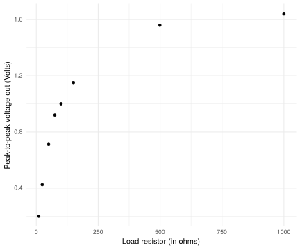

Schematic
I’ve been thinking about 10MHz to sync the time in the instruments, and also as a reference for on-air radio. A place to start is with a simple crystal oscillator, and I build the buffered version of a Colpitts oscillator, in the circuit known as the G3UUR oscillator (taken from page 7.38 of Experimental Methods in RF Design:
Schematic
I used a 10MHz crystal that came in a cheap ebay assortment kit. The circuit oscillates at what appears, according to my HP53131a counter, at 9,998,127 Hz. So slightly low - or perhaps my counter is off? Difficult to know without a reference (which will come later). For know, I just note that it oscillates at around 10MHz.

The oscillator on the bench.
Instead of trying to calculate what the output impedance of the circuit is, I use my Rigol DS2072a oscilloscope to measure the peak-to-peak voltage at the output with different loads. I press the load resistor directly down on the board. Without any load except the high-impedance of the oscilloscope, I measure 1.950 Vpp. With the load resistors, as in the figure below.

Note that for low resistor loads, the amplifier also didn’t have enough drive to preserve the symmetric shape of the signal, which makes me think that we should focus on the higher loads for calculating the output impedance.
The voltage out can be represented as a pure voltage source plus the internal resistance \(R_O\) (output impedance) in series with the resistive load to ground. Then I am measuring the output at a stage in a voltage divider formed by \(R_o\) and my load resistor \(R_L\), \[ V_L = \frac{R_L}{R_L+R_O} V_O.\] So for two different loads \((R_L,R_L')\) and measured voltages \((V_L, V_L')\), we get the ratio \[ \frac{V_L'}{V_L} = \frac{R_L'}{R_L+R_L'} \frac{R_O + R_L}{R_L},\] solving this and putting into a function, we have
output_impedance <- function(v1,v2,r1,r2) {
vratio <- v2/v1
rratio <- r2/r1
(r2 - vratio * r2) /(vratio - rratio)
}Using the 100R and 500R measurements, I calculate an output impedance of 81, with the 50R, 150R I get 67. With the lower resistor of 50Ohm, the curve shape was distorted most, so I go with the interpretation of about 80 ohm output impedance. Matching to 50Ohm would require a transformer with a turns-ratio of 1.3, I’m not sure that would be worth it for now.